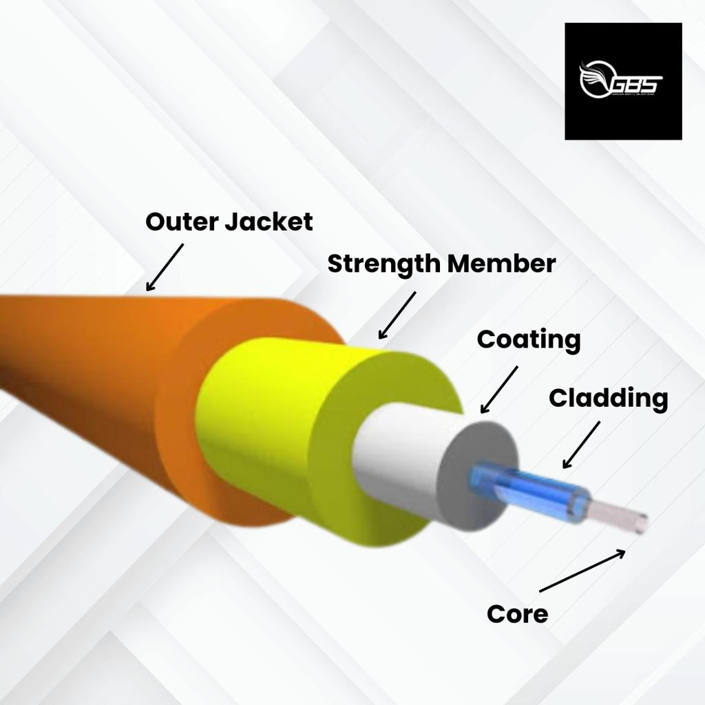
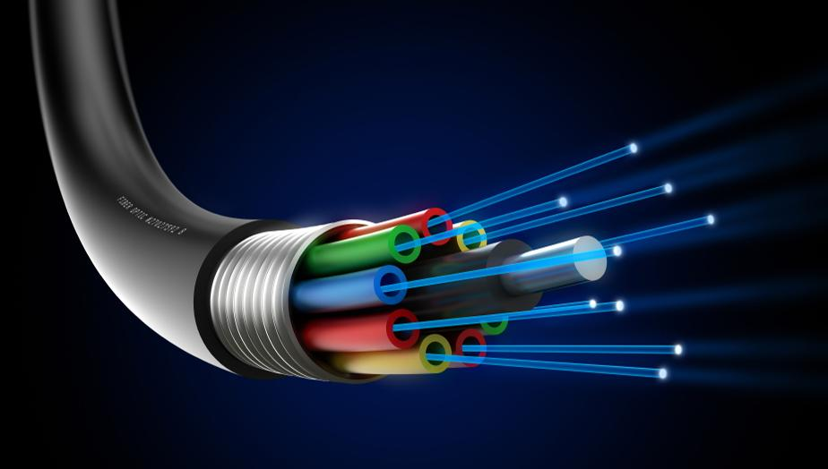
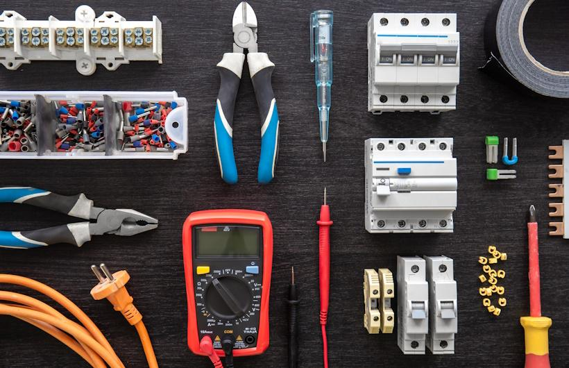

3. Kabel Fiber Optic (FO)
Nah, ini yang paling menarik dan penting untuk masa depan:




💡 2. KABEL FIBER OPTIC – TEKNOLOGI MASA DEPAN
📖 Apa itu Fiber Optic?
Fiber Optic adalah kabel jaringan yang menggunakan cahaya untuk mengirim data, bukan listrik.
👉 Bayangkan:
Kabel biasa = kirim data pakai listrik
Fiber optic = kirim data pakai cahaya (super cepat)
⚡ Kenapa Harus Pakai Fiber Optic?
🚀 1. Kecepatan Sangat Tinggi: Mbps → Gbps → bahkan Tbps. Itulah kenapa WiFi rumah sekarang bisa 100 Mbps atau lebih.
📏 2. Jarak Jauh Tanpa Gangguan: UTP hanya ±100m | FO bisa puluhan kilometer. Dipakai untuk antar kota, pulau, dan bawah laut!
🔒 3. Tidak Terpengaruh Gangguan Listrik: Aman dari Petir atau tegangan tinggi karena pakai cahaya.
🔐 4. Lebih Aman: Sulit disadap karena tidak memancarkan sinyal listrik.
🌱 5. Lebih Tahan Masa Depan: Semua butuh FO (Smart City, IoT).
📽️ VIDEO TUTORIAL (TIKTOK)
Saksikan video ini agar kalian lebih paham cara kerja kabel masa depan ini: